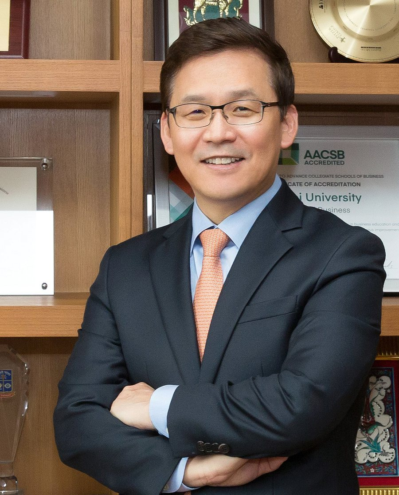
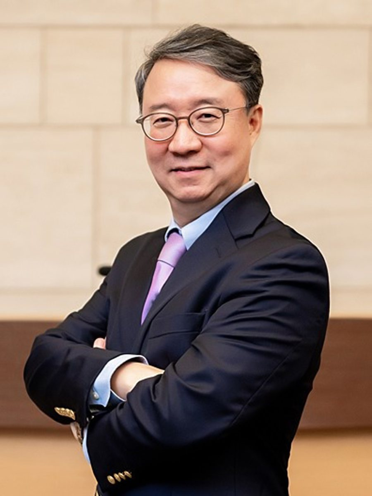
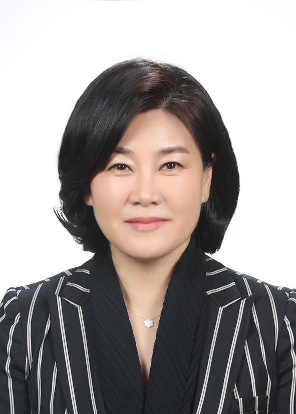
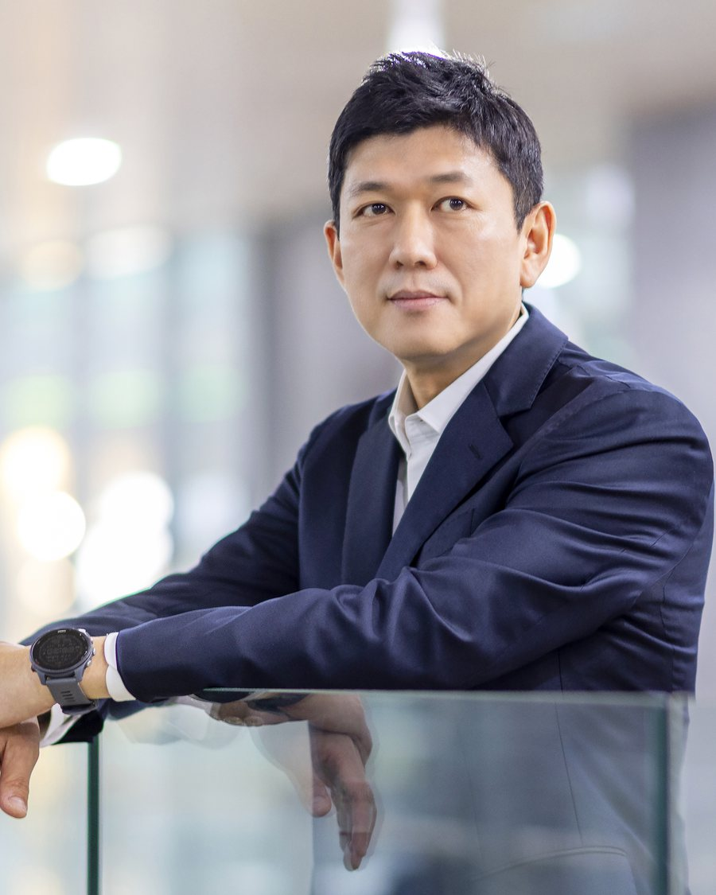
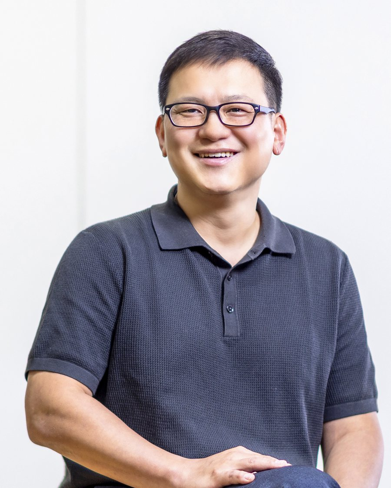

공급사슬 경영
Supply Chain Management
구매 및 협력업체 전략, 물류와 유통채널 관리, 공급망 전체를 아우르는 통합적 경영을 연구합니다.
Sourcing and supplier strategy, logistics and distribution channels, and the integrated management of end-to-end supply networks.
본 전공은 고객이 원하는 제품과 서비스를 만들어 내는 기업의 전환 프로세스를 설계하고 관리하며 개선하는 방법을 연구합니다. 신제품 개발에서 구매·생산·물류를 거쳐 공급망 전체의 통합적 경영에 이르는 영역이 연구 대상입니다.
We study how firms design, manage, and improve the transformation processes that create the goods and services customers want, from new product development through sourcing, production, and logistics, to the integrated management of the entire supply network.
2026년 9월 기준
As of September 2026
연세대학교 경영대학 오퍼레이션 전공 홈페이지입니다. 지금은 전임 교수 6명이 박사과정 2명과 석사과정 7명을 지도하고 있고, 2019년 이후 국내외 연구자를 초청해 65차례 세미나를 열었습니다.
This is the Operations Management area at Yonsei School of Business. Six faculty members currently advise three doctoral and nine master's students, and we have hosted 65 research seminars since 2019.
Operations Management(운영관리) 분야에서는 고객이 원하는 제품과 서비스를 창출하는 기업의 전환 프로세스(transformation process)를 설계·관리·개선하는 방법을 연구합니다. 신제품 및 신서비스의 설계와 혁신, 생산 및 서비스 전달 프로세스의 구축, 구매 및 물류 프로세스 등 가치사슬 전반에 걸쳐 연구하며, 최근에는 공급업체 및 유통·판매업체와의 전략적 협업을 통한 공급망 전체의 통합적 경영으로 연구 범위가 확대되었습니다.
Operations Management asks how firms actually get things made and delivered. We work on new product development, sourcing and production, logistics, and service delivery. In recent years the field has widened from single firms to whole supply networks.
학부 전공은 무관합니다. 필요한 지식은 대학원 수업에서 처음부터 배울 수 있습니다.Your undergraduate major does not matter. Everything you need is taught from the ground up in our graduate courses.
구매와 협력업체 전략에서 지속가능성까지, 가치사슬 전반을 다룹니다.
From sourcing and supplier strategy to sustainability, across the whole value chain.
구매 및 협력업체 전략, 물류와 유통채널 관리, 공급망 전체를 아우르는 통합적 경영을 연구합니다.
Sourcing and supplier strategy, logistics and distribution channels, and the integrated management of end-to-end supply networks.
고객이 원하는 제품과 서비스를 만들어 내는 전환 프로세스를 설계하고 개선하는 방법을 연구합니다.
Designing and improving the transformation processes through which firms create the goods and services customers want.
기술전략과 연구개발 관리에서 신제품·신서비스의 개발 방법론과 제품 설계에 이르는 혁신의 과정을 연구합니다.
From technology strategy and R&D management to development methodology and product design for new products and services.
서비스 전달 프로세스, 수요·공급 조정, 수익경영 등 서비스 기업의 운영 문제를 연구합니다.
Service delivery processes, demand-supply coordination, and revenue management in service firms.
생성형 AI와 머신러닝을 제품 개발과 공급사슬 의사결정에 적용하는 문제를 연구합니다.
Applying generative AI and machine learning to product development and supply chain decisions.
탄소배출, 공정무역, 기업지배구조 등 공급사슬의 지속가능성 문제를 실증적으로 분석합니다.
Empirical work on carbon emissions, fair trade, governance, and other sustainability questions in supply chains.
2020년 1학기부터 BA 융합과정을 운영합니다. 필수 6과목 포함 36학점을 이수하면 융합전공 학위를 받습니다.
Since spring 2020 we have offered a joint track with Business Analytics: 36 credits including six required BA courses.
교수 1인당 수업 조교 장학금(등록금 면제), 매 학기 BK 장학금, 관정·용운·배정 등 외부 장학금을 안내합니다.
A teaching-assistant scholarship (full tuition) per faculty member, BK21 stipends each semester, plus external fellowships.
국내외 주요 대학의 연구자를 초빙하여 매 학기 세미나를 개최합니다. 학생은 이를 통해 최신 연구 동향을 파악하고 자신의 연구 주제를 구체화합니다.
Each semester we host scholars from leading universities at home and abroad, helping students find and sharpen their own topics.
여섯 분의 전임 교수와 두 분의 명예교수가 함께합니다.
Six full-time faculty members and two professors emeriti.

H공급체인 구조 및 변화 전략, 글로벌 SCM 비교분석, 신제품 개발과 공급체인 통합전략
Supply chain architecture and transformation strategy; comparative global SCM; integrating new product development with the supply chain
경영관 524 · 02-2123-5487Business Hall 524 · 02-2123-5487

M지속가능성과 혁신, 공급사슬관리
Sustainability and innovation; supply chain management
경영관 521 · 02-2123-6261Business Hall 521 · 02-2123-6261

C서비스 운영관리, 수익경영
Service operations management; revenue management
경영관 653 · 02-2123-5479Business Hall 653 · 02-2123-5479
기술경영, 기술전략, 신제품 개발공정, 신서비스 개발 방법론, 제품 디자인 및 설계, 기술정책
Technology management and strategy; new product development processes; new service development; product design; technology policy
경영관 613 · 02-2123-6578Business Hall 613 · 02-2123-6578

P공급사슬관리, ESG 경영(탄소배출·공정무역·기업지배구조), 국제경영, 해외자회사
Supply chain management; ESG (carbon emissions, fair trade, corporate governance); international business; foreign subsidiaries
경영관 528 · 02-2123-2546Business Hall 528 · 02-2123-2546

J오퍼레이션 데이터 애널리틱스, 데이터 기반 의사결정, 물류·수송, 소싱, 오퍼레이션 전략, 지속가능성
Data analytics in OM; data-driven decision making; logistics and transportation; sourcing; operations strategy; sustainability
경영관 649 · 02-2123-5473Business Hall 649 · 02-2123-5473
본 전공은 국내외 주요 대학의 연구자를 초빙하여 연구 발표 시리즈를 운영합니다. 석·박사 과정 학생은 이를 통해 최신 연구 동향을 파악하고 자신의 연구 주제를 선정·발전시킵니다.
We invite scholars from leading universities in Korea and abroad. For our graduate students the series is where research trends become visible and dissertation topics take shape.
교수와 학생, 졸업생의 소식을 한곳에 모았습니다.
News from our faculty, students, and alumni in one place.
졸업생들은 국내외 기업의 프로세스 설계와 공급사슬 관리, 컨설팅, 연구소, 그리고 학계로 진출합니다. 학계로 진출한 동문들은 국내외 대학에서 연구와 교육을 이어가고 있습니다.
Our graduates work in process design and supply chain management at Korean and multinational firms, in consulting, in research institutes, and in academia, in Korea and abroad.
OM은 가치의 흐름에 대한 학문이라 생각합니다. 그렇기에 모든 기업과 조직에 적용할 수 있는 범용성을 가지면서, 동시에 다양한 지식과 경험이 영감의 원천이 될 수 있으리라 봅니다.
I came to think of OM as the study of how value flows. That makes it general enough to apply to any organization, while letting all kinds of knowledge and experience become a source of insight.
앞으로의 OM 신입생분들도 경영학의 지평을 넓히면서 자신만의 경쟁력을 만들고, 나아가 새로운 커리어의 전환점을 맞을 수 있으리라 기대합니다.
I hope the students who come next will widen the horizon of business research, build something that is theirs alone, and find a turning point in their careers.
입학을 위해 필요한 지식은 대학원 수업에서 처음부터 배울 수 있습니다. 학부 전공은 무관합니다. 필요한 것은 주요 연구 분야에 대한 열정입니다.
Everything you need is taught from the beginning in our graduate courses, whatever you majored in. What we ask for is enthusiasm for the questions we work on.